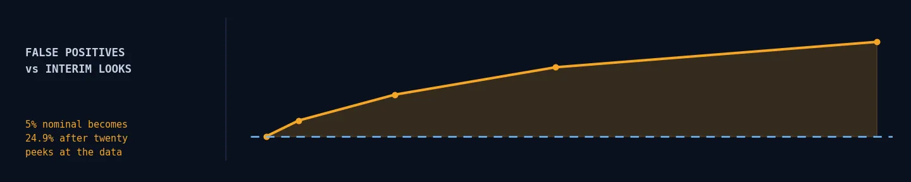
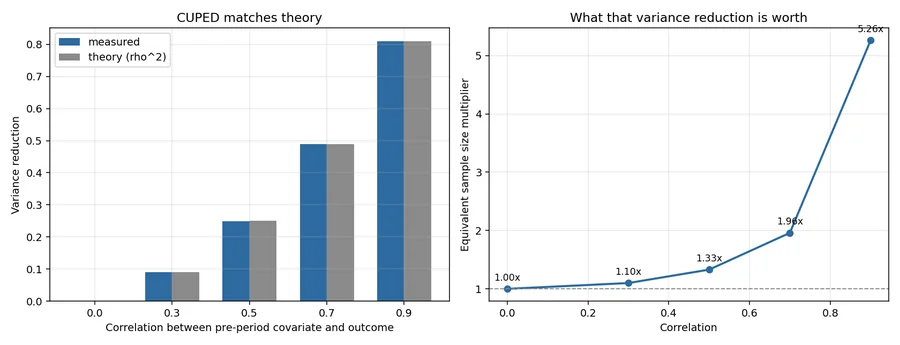
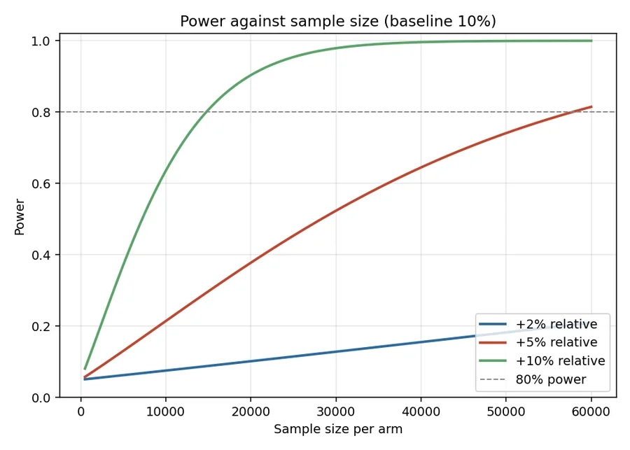

Experimentation · simulation · validation
A/B Test Toolkit
Watching a test daily for three weeks and shipping on first significance is wrong one time in four, on experiments where nothing is happening at all.

A statistics library that is merely plausible is worthless — the failure mode is silent, wrong numbers that look entirely reasonable. So nothing here is asserted.
A test claiming α = 0.05 is simulated 50,000 times under the null to confirm it rejects 5% of the time. CUPED's variance reduction is measured against its theoretical value. Peeking is shown to inflate false positives, and the correction is shown to fix it.
Peeking is not a small problem
Under no true effect whatsoever, checking the dashboard as data accumulates and stopping when it goes green:
| Interim looks | False positive rate | Inflation |
|---|---|---|
| 1 (fixed horizon) | 5.0% | 1.0× |
| 2 | 8.3% | 1.7× |
| 5 | 13.8% | 2.8× |
| 10 | 19.5% | 3.9× |
| 20 | 24.9% | 5.0× |
That is not a subtle statistical nicety — it is most of the "wins" in a badly run experimentation programme.
The fix is cheap. A Pocock-style constant boundary, solved by simulating the correlated sequence of interim statistics, brings ten looks from a 19.2% false positive rate back to 5.3%, at α = 0.0108 per look.
CUPED is close to free sample size
Subtracting the part of the outcome that a pre-experiment covariate already explains removes between-user noise without touching the expected effect.
| Correlation ρ | Theory (ρ²) | Measured | Worth this much extra traffic |
|---|---|---|---|
| 0.3 | 0.0900 | 0.0902 | 1.10× |
| 0.5 | 0.2500 | 0.2499 | 1.33× |
| 0.7 | 0.4900 | 0.4897 | 1.96× |
| 0.9 | 0.8100 | 0.8098 | 5.26× |
At ρ = 0.7 — an ordinary correlation between a user's pre-period and in-period behaviour — CUPED is worth doubling the sample size, for the cost of one covariance calculation.
The claim that matters is that this is not bought with bias. Estimating a known true effect of 0.05 across 3,000 simulated experiments: naive mean 0.0492 with SD 0.0200; CUPED mean 0.0498 with SD 0.0143. Same centre, 28% narrower — and the ratio 0.717 matches the predicted √(1−ρ²) = 0.714.

Most experiments are not powered for the effects people hope for
At a 10% baseline conversion rate, α = 0.05, 80% power:
| Target lift | Per arm | Days at 5,000/arm/day |
|---|---|---|
| +1% relative | 1,419,073 | 284 |
| +2% | 356,335 | 71 |
| +5% | 57,763 | 12 |
| +10% | 14,751 | 3 |
Sample size scales with the inverse square of the effect, so halving the effect you want to detect quadruples the traffic. Turned around: with 10,000 users per arm you can only detect a +12.2% relative change.
Any smaller true effect will mostly produce a null result — and "no significant difference" then means "we could not have seen it", which is a very different statement from "it does nothing".

Validity beats precision
Three worked readouts ship with the repo, each exercising a different failure.
A clean win. +11.8% relative, p = 0.008, 95% CI [+0.16pp, +1.04pp], P(treatment better) = 99.6%. → Ship.
A sample ratio mismatch. A 50/50 design that delivered 20,800 / 19,200 — chi-square p = 1.2e-15. The effect looks mildly positive, but randomisation or logging is broken, so the estimate means nothing. → Do not ship, regardless of the effect. This check catches more bad decisions than any refinement of the test statistic.
Simpson's paradox. The aggregate says treatment is −10.7pp, catastrophic. Within desktop it is +2.4pp and within mobile +1.2pp — treatment helps everyone. It was simply served mostly to mobile users, who convert far worse. Reporting the aggregate would have killed a good feature.
The readout runs in the order a reviewer should read it — validity, then effect, then decision — because an effect estimate from a broken experiment is worse than no estimate.
A test of mine that was wrong in an instructive way
One test originally asserted that a single draw from two unequal-variance distributions would come out non-significant. That is asserting a coin flip: it passed locally and then failed on a different seed.
It now measures the rejection rate over 600 trials, which is the property that was actually meant. The general lesson is that a statistical test suite has to assert distributions, not draws — and the same reasoning is why confidence intervals lead the readouts and p-values follow, why Wilson and Newcombe intervals replace Wald, and why the SRM threshold sits at 0.001 rather than 0.05.
What this does not support
- The validation studies use simulated data. That is deliberate — you cannot verify a false positive rate without knowing the ground truth, which real data never gives you. But it means these results validate the methods, not any product claim.
- Fixed-horizon and Pocock only. No always-valid sequential inference (mSPRT, confidence sequences), which is what a mature platform would use to allow continuous monitoring honestly.
- Binary and continuous metrics only. Ratio metrics need the delta method for correct variance; count metrics often need a negative binomial.
- Independent randomisation units assumed. Any network effect, marketplace interference or repeated-measures structure breaks that, and none of these tests would notice.
- No CUPED variant for binary outcomes with low base rates, where stratification often works better than the linear adjustment.